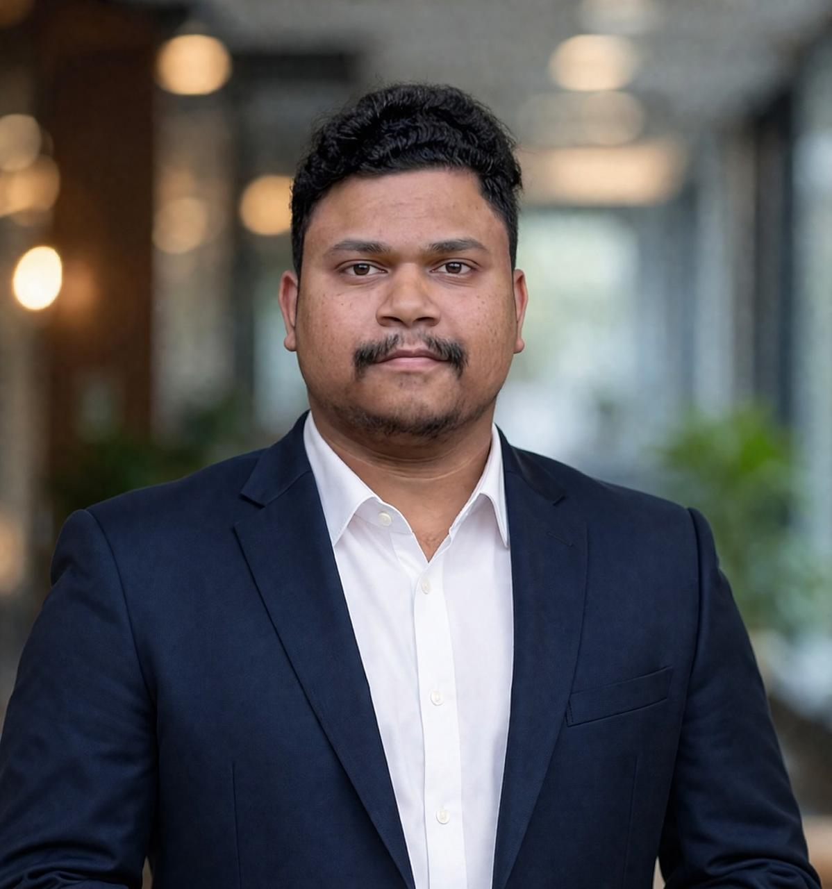

Business & Process Analyst
Infosys BPM · Bengaluru, India
Worked across requirements gathering, process mapping, KPI reporting, service improvement, and stakeholder review in enterprise IT operations.
I’m Pruthiviraj Hansdah, a Business Analyst with 3+ years of experience in IT service delivery, process improvement, and stakeholder management. I translate operational pain points into clear requirements, better workflows, and actionable reporting.

BUSINESS ANALYSTBengaluru · IndiaPortfolio exercises using fictional IT service desk records and a separate public civic dataset. None of the demo figures represents employer or client performance.
Bengaluru, Karnataka, India
B.Tech, Computer Science Engineering
GIET University · 2022
Business analysis grounded in hands-on enterprise support and service operations.
ITIL 4 Foundation · Microsoft Power BI Data Analyst · Microsoft Azure Fundamentals (AZ-900)
Worked across requirements gathering, process mapping, KPI reporting, service improvement, and stakeholder review in enterprise IT operations.
Built experience in enterprise support, incident lifecycle coordination, trend review, documentation, and cross-team escalation.
Graduated in May 2022.
Interested in Business Analyst opportunities and meaningful process improvement work.